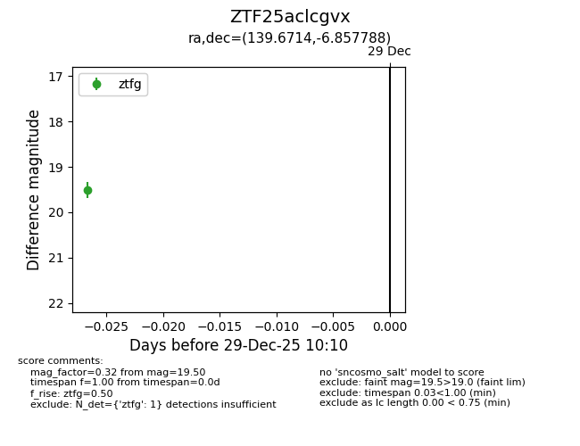
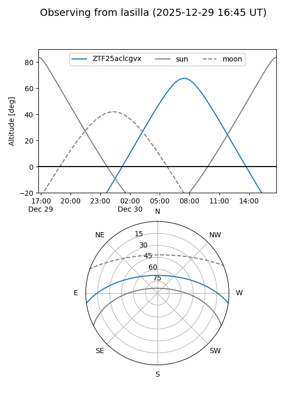
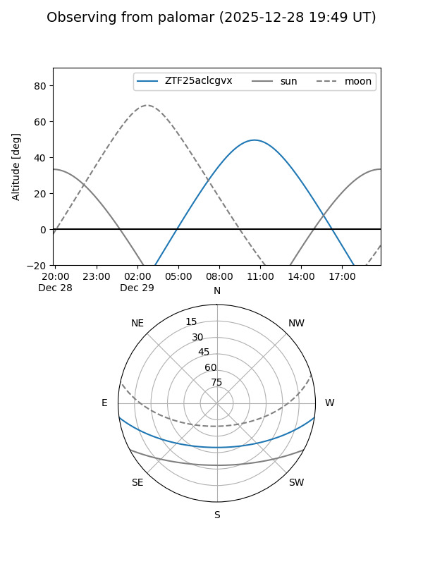

ZTF25aclcgvx
Target ZTF25aclcgvx at 2025-12-29 10:11
Aliases and brokers:
FINK: fink-portal.org/ZTF25aclcgvx
Lasair: lasair-ztf.lsst.ac.uk/objects/ZTF25aclcgvx
ALeRCE: alerce.online/object/ZTF25aclcgvx
alt names
ZTF25aclcgvx (ztf,fink_ztf)
Coordinates:
equatorial (ra, dec) = 139.6714,-6.85779
equatorial (HMS+DMS) = 09:18:41.12,-06:51:28.04
galactic (l, b) = (238.3377,+28.35996)
Flags:
Photometry:
last ztfg=19.50
1 ztfg detections
Lightcurve

Visibility


Additional plots